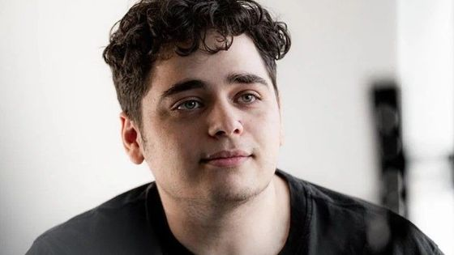
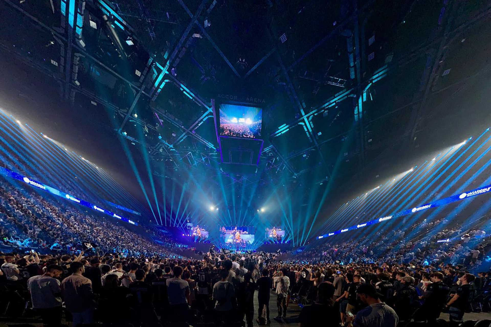

Contrary to a lot of e-sports teams owned by companies or billionaires, KCorp was created simply by a passionated man. Kamel was born in Corbeilles-Essonnes, and while working at a computer repair store, he dreamt of creating an e-sports team that would one day win world championships. He then started streaming videogames on Twitch, in hope to get enough money to, one day, make his dream come true. The team was officially founded as 'Kameto Corp' on 30 March 2020 by Twitch streamer duo Kamel "Kameto" Kebir and Zouhair "Kotei" Darji, and took its current name when rapper and entrepreneur Amine "Prime" Mekri joined it as a founding member and joint owner on 16 November 2020.
Kamel "Kameto" Kebir, head CEO of KarmineCorp
The Karmine Corp fanbase started following the team since its fundation in 2020. It never misses a single match nor any real-life event. The most hardcore fans are grouped in an association called "Le Blue Wall" which has a mascot and banners, just like teams in regular sports. They can travel all around the world to cheer and shout for the team. Karmine Corp is the first e-sport team in Europe to create events in stadiums, called "KCX" (KC Experience). The first one was in 2021 and took place in Paris in front of 3500 fans, and the most recent one was held in La Defense Arena, before 30.000 fans in place and more than 150.000 on the live stream, where KC battled against teams from all around the world.
Image of the KCX2 event in Paris, 2023